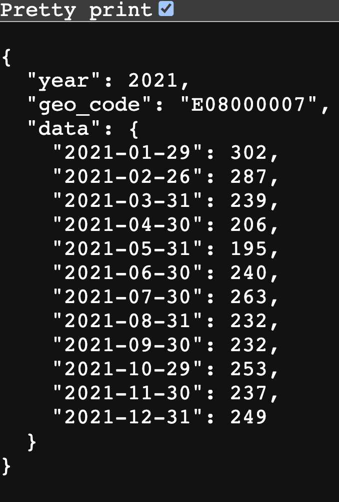

Cloud tools and Python packages have become so powerful that you can build a (scalable) cloud-based API in fewer than 200 lines of code. In this blog post, you’ll see how to use Google Cloud, Terraform, and FastAPI to deploy a queryable data API on the cloud.
The repository associated with this project can be found here should you wish to try this for yourself.

Background
The basic idea here is: create an image of a computer that serves up an API, stick it on a scalable cloud function, and let it rip so that anyone can query it.
Why might you want to deploy an API? I covered this in a previous blog post and the short answer is that they’re awesome at servicing data or prediction requests in an efficient way.
First, some caveats. I’m only counting lines of code for the API and the cloud infrastructure, not for the extraction and transform of the data we’ll be serving up. ie, this doesn’t count the code that creates the data, which is in the etl folder. This seems fair: I happened to pick a dataset that needed a bit of “E” and “T” love before being usable, but I could have started with any old dataset. Second: if you’re going to follow this and create your own scalable cloud API, you will need a Google Cloud account with the billing setup (or some free credits). Finally, be very careful not to share your cloud keys or your real terraform variable names if you are following this tutorial on a public repo. I’ve added the relevant files to the .gitignore file for those cloning the repo but you should be as cautious as ever when dealing with secrets that should not be shared publicly.
Okay, let’s look at the technologies we’re going to use.
Google Cloud Platform
Google Cloud Platform (GCP) provides a whole suite of cloud services, and is one of the major providers. It seems to have been made for data scientists, and has a great command line interface. The specific GCP components we’ll be using are:
- an image registry, to store the image of a computer than can serve up data via an API
- Google Cloud Run, which actually serves up the computer image
It’s worth nothing that Cloud Run is serverless, which means you don’t have to fiddle with back-end resources to run applications. It can scale up or down as needed. Essentially, Google are handling the back-end stuff so you don’t have to. Like any tech, it has its limitations, but it’s a great choice for a simple, pain-free API deployment based on a container.
Terraform
As cloud platforms have proliferated, there’s a danger of getting back to point-and-click interfaces, problems with reproducibility, vendor lock-in, and other things we try to avoid as data scientists. Terraform is a tool that helps you do “infrastructure as code”, ie to build, change, and version control cloud resources safely and efficiently. One of the advantages is, once you have specified it once, you can re-use a Terraform plan to create the same infrastructure again down the line.
Python and FastAPI
FastAPI is a Python package for building APIs that has a whole range of benefits:
- Very high performance.
- Fast to code with fewer bugs, as picks up type hints and makes use of decorators.
- Full code completion support.
- Automatically creates interactive documentation.
- Based on (and fully compatible with) the open standards for APIs: OpenAPI (previously known as Swagger) and JSON Schema.
Let’s see an example of some of this good stuff. First, the API endpoint is incredibly simple to create. Say we have a dataframe, df, which has the data we’d like to serve in. To turn a Python function that serves up data according to particular cuts into an API we need only add a decorator, an async statement, and add type hints. Here’s a simplified version of the example that gets built through the rest of this blog post:
@app.get("/year/{year}/geo_code/{geo_code}")
async def read_item(year: int, geo_code: str):
json_data = df.loc[
(df["year"] == year) & (df["geo_code"] == geo_code), "deaths"
].to_dict()
return {"year": year, "geo_code": geo_code, "data": json_data}This simple declaration buys us a lot. If you hit the API endpoint from this repo with this query: /year/notanumber/geo_code/E08000007, ie a valid geographic code but year is not an integer, then pydantic data validation checks are automatically run and return the following error message to the user:
{
"detail": [
{
"type": "int_parsing",
"loc": [
"path",
"year"
],
"msg": "Input should be a valid integer, unable to parse string as an integer",
"input": "notanumber",
"url": "https://errors.pydantic.dev/2.4/v/int_parsing"
}
]
}The API knows you didn’t pass a valid integer! The year: int part of the function declaration determines that any input to the year segment of the API must be an integer.
Okay, with a bit of context out of the way, let’s now walkthrough building an API. All of the code is available here.
Initial Setup
Code Installs
Download and install terraform. Do the same for poetry and ensure you have a Python installation (this tutorial uses Python 3.10 and that version is baked into the pyproject.toml file that poetry uses—link here).
Create a Google Project
Get a Google Cloud Account.
Ensure you have the Google CLI installed and authenticated: once you have downloaded and installed it, run gcloud init to set it up. Then run gcloud auth login to ensure you are logged into your account. With these steps done, you can make changes to your Google Cloud account from the command line.
We’re now going to create a project on the command line.
gcloud projects create YOUR-PROJECT-IDYou may wish to add some numbers to the end of the project name to ensure it is unique, as most obvious names are already taken (and, if a name is taken, project creation will fail). (Note that you will need to set the same project ID in your terraform.tfvars file, which we’ll come to later.)
Next up, switch the Google Cloud CLI to use this specific project:
gcloud config set project YOUR-PROJECT-IDNow we have to go to the Google Cloud Console. Navigate to the relevant project, and then create a new Service Account under IAM. The current URL is here. A service account can be used to manage access to Google Cloud services.
In the new service account, click on Actions then Manage keys. Create a new key and download it as a JSON file—do not put it under version control! If you’re following this tutorial by cloning the associated repo, you can put it in the secrets subdirectory with the name google_key.json because the contents of the secrets folder are not under version control—but always, always double check.
If you haven’t already, you’ll also need to set up billing, which can be found under Billing in the left-hand side navigation pane. For me, the cost of setting this up was less than 1 pence.
Terraforming Google Cloud Components
Terraform is a cross-cloud way of specifying resources. We’re going to use it enable a couple of cloud APIs and name an Artifact Registry. (This registry is eventually where we will push a docker image of our app.)
main.tf is the main terraform file (link here). It lists the API services that we’ll use from Google, gives them names, and also enables them too. There are a few distinct blocks:
- terraform metadata
- provider region and project information
- a block representing the container registry API
- (last two blocks) code that enables the registry and cloud run APIs
One of the slightly confusing things about terraform is that it works out what order to apply these changes in itself, so we don’t have to worry about the fact that the blocks enabling APIs come after the blocks creating new resources under specific APIs.
.terraform.version contains the version of terraform you’re using (run terraform --version to check).
variables.tf provides meta-data on the variables needed in your project (link here).
In an extra file, that is not included in this repo and which shouldn’t be public, called terraform.tfvars, put the actual names of your Google Cloud Project variables. The contents will look like this:
# GCP settings
project_id = "YOUR PROJECT ID"
region = "YOUR REGION"
# Artifact registry
registry_id = "YOUR ARTIFACT REGISTRY NAME"There should be an entry in this file for every variable in the variables.tf file.
Now run terraform init. If successful, you should see a message saying “Terraform has been successfully initialized!”.
Next, run terraform plan, which will think through what you’ve asked for in main.tf.
Finally, to create the GCP resources, it’s terraform apply. If successful, you will see a message saying: “Apply complete! Resources: 3 added, 0 changed, 0 destroyed.”
An alternative to using the last block of main.tf to enable the APIs is to use the Google Cloud CLI.
gcloud services enable artifactregistry.googleapis.com
gcloud services enable run.googleapis.comYou can check what services you have enabled with gcloud services list --enabled. If you’re doing a huge project and want to filter, you can of course grep your way to the info you’re interested in, eg gcloud services list --enabled | grep run to check whether run.googleapis.com is on the list.
Python and the API
Setup
Run poetry config virtualenvs.in-project true to make virtual environments be installed in the local project folder.
Run poetry install to install the Python env. If this has worked, you’ll see a .venv folder appear and, if you’re using it, Visual Studio Code might ask if you want to use the newly created environment for executing Python code. (Note that poetry config virtualenvs.in-project true doesn’t always play nicely with conda; there’s an open Poetry issue about this but it did seem to work when in the base environment of conda.)
To try and help achieve high code quality, this repository uses pre-commit. You can run this using poetry run pre-commit run --all-files. As this is not essential, and the associated specification of packages isn’t really code, I didn’t include the file that specifies the pre-commit checks, .pre-commit-config.yaml, in the count of the number of lines of code.
Prepping the data
You can choose any small dataset you like here. In this case, because it’s more fun, I stitched together some data on deaths that was scattered across Excel files in a weird format for the API to serve up. You can find the original data files here. For larger datasets, you’d want to do a “load” (the “L” in “ETL”) step too, and have the data live in a GCP database that gets queried by the API.
NB: the data are not included in the repo, you’ll need to run the Python scripts yourself!
There are a few Python scripts in a folder called etl. These perform the following functions:
etl/extract.py— downloads deaths data by geography from this ONS page, which has Excel files for each year. The script downloads them all. Link.etl/transform.py- this takes downloaded files, opens them, finds the relevant sheets, cleans them, and stacks them in a tidy format in a parquet file. Link. Challenges are:- Worksheet names change over time
- File formats change (the file extension)
- New data may be added in a new file, if the new data refer to January, or added into an existing file, if the month they refer to is not January
etl/main.py— this is a script that calls the extract and transform scripts in order to create the final dataset,scratch/deaths_data.parquet. Link.
To create the data we’ll be serving up later, it’s
poetry run python etl/main.pyLaunching the API locally (optional)
To use FastAPI locally to serve up your API and check it works, you’ll need to have installed the Python environment (via poetry)
poetry run uvicorn app.api:app --reloadwhere app is the folder, api.py is the script, and app is the FastAPI application defined in api.py. This serves up an API in the form: /year/{YEAR-OF-INTEREST}/geo_code/{GEO-CODE-OF-INTEREST}. For example, if FastAPI is running on http://0.0.0.0:8080, then http://0.0.0.0:8080/year/2021/geo_code/E08000007 would serve up the 2021 deaths data for Stockport (which has UK local authority geographic code E08000007). You can also try http://0.0.0.0:8080/docs to see how you get automatic interactive docs for free with FastAPI!
Deploying the API to the cloud
We already enabled the Cloud Run API using terraform. The plan now is: build a docker container with everything needed to serve up the API in, build the docker file into an image, upload the image to the artifact registry we created on Google Cloud, and then serve the API on Google Cloud Run. First, we need to ensure our env is reproducible in a docker file.
Building the docker image
You can make poetry (which this project uses) work in docker files but it can go wrong, so it’s easier to run:
poetry export -f requirements.txt --output requirements.txtAnd have the docker file use the requirements.txt. Note that, because of this method of prepping the docker file, requirements.txt has been added to the .gitignore file. This follows the single source of truth rule: if we keep requirements.txt and pyproject.toml under version control simultaneously, it creates confusion as to which defines the environment. In this approach, it’s clear: pyproject.toml sets out the Python dependencies and requirements.txt is downstream of that.
Note that the dockerfile is just 16 lines of code and only includes the absolute bare minimum required to run the API.
Also note that the name deaths_data.parquet is hard-coded in the dockerfile. There’s probably a way to get it to pull the name of the data file from the config.toml file where it’s defined, but let’s keep things simple.
Testing the containerised API locally (optional)
You can check that your Dockerfile works locally first if you wish. To do this, run
docker build --pull --rm -f "Dockerfile" -t deploy-api:latest "."to build it and then
docker run --rm -it -p 8080:8080/tcp deploy-api:latestto run it. You should get a message in the terminal that includes a HTTP address that you can go to (this isn’t really on the internet… it’s coming from inside the house!). Click on that and you should see your API load up. For example, if it’s on http://0.0.0.0:8080 head to http://0.0.0.0:8080/docs to check that the docs have loaded and try out the API.
Building the docker image for Google Cloud Run
Now we run into a complication. I’m using a Mac, which is on arm64 architecture, aka Apple Silicon. Most cloud services are Linux-based, which typically use amd64 chips. Naively building an image locally, and pushing it to Google Cloud, would result in an image that won’t actually run on Google’s architecture. So we need to use a multi-platform build, or just build to target a specific architecture. (Docker is supposed to solve this kind of problem, and it does, with a bit more effort.)
You need to use
docker buildx create --name mybuilder --bootstrap --useto create a builder to take on image construction. Then, the magic command to build the image and push it to your google repo is:
docker buildx build --file Dockerfile \
--platform linux/amd64 \
--builder mybuilder \
--progress plain \
--build-arg DOCKER_REPO=REGION-docker.pkg.dev/PROJECT-ID/REPOSITORY-NAME/ \
--pull --push \
--tag REGION-docker.pkg.dev/PROJECT-ID/REPOSITORY-NAME/deploy-api:latest .where REPOSITORY-NAME is the name of the registry_id variable in terraform.tfvars. Note the “platform” argument.
Deploy
Now deploy the app with
gcloud run deploy app --image REGION-docker.pkg.dev/PROJECT-ID/REPOSITORY-NAME/deploy-api:latest --region REGION --platform managed --allow-unauthenticated
All being well, you should get a message saying
Deploying container to Cloud Run service [app] in project [PROJECT-ID] region [REGION]
✓ Deploying new service... Done.
✓ Creating Revision...
✓ Routing traffic...
✓ Setting IAM Policy...
Done.Here’s one I built earlier!
You can see a running version of the app from the repo here: https://app-qdvgjvqwza-nw.a.run.app. You can find the docs here. And here’s an example that returns data. Note that one constraint of Cloud Run is that it takes a moment to start if no-one has used the link for a while.
Final Thoughts
It’s worth noting that, if all your API is doing is serving up tabular data, there is an easier way to to this (even though building an API with FastAPI is so easy). You can use the excellent datasette. You can see a worked example of using it to serve up some data here. It seems like FastAPI would be much more useful with more unusually structured data, when you need to interact with data by writing as well as reading, or when you need Cloud Run to do other activities too (like pull from a Google database).
The commoditisation of cloud services, and the great developments in Python as a language, have made it far, far easier to create high quality APIs. Although there are a few components to get your head around here, it’s amazing how quickly you can create a working API—and how few lines of code are required.